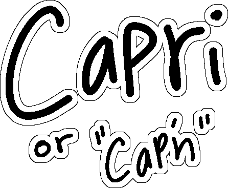

Capri sustained a scar to his left pec and a chip to his left ear during a territorial struggle with the local dragon.
Be careful, Capri's strong jaw and sharp teeth can easily tear through solid steel.
Capri possessses two rows of teeth. Teeth lost can be regrown within a week's time.
Capri's big eyes help him stalk prey without losing sight of them even in deep waters.
Deer-like antlers protruding from Capri's head.
These unique antlers give of an air of nobility. They also vibrate if needed to allow for echolocation.
Capri's long ears allow for advanced hearing out of water and on the surface.
Capri's huge tail — charactaristic for a thresher shark — is taller than him.
In combination with several fins, it provides superior manueverability, stability and speed under water, allowing Capri to swim unimpeded even through the toughest currents.
Capri's tail is warm and soft to the touch. He likes to gently wrap it around you during a hug.
Capri's webbed paws help swimming on the water surface while providing superior grip strength.
Retractable nails on paw digits allow for clawing.
Wingflaps extend from underneat Capri's arms and can be used to glide through the air.
Strong arms and legs that can be perfectly folded into the body for better hydrodynamics. During diving and swimming the tail takes over.
The same applies during air gliding.
The lower legs resemble canine legs, with a digitigrade stance and large paws.
Muscular calves and thighs provide the necessary power for jumping and running.